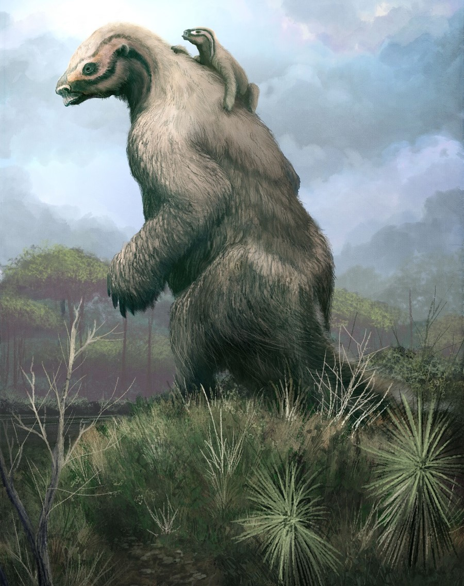
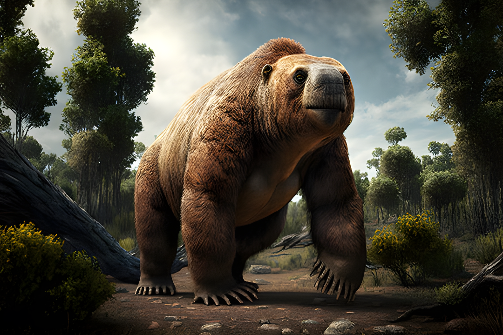
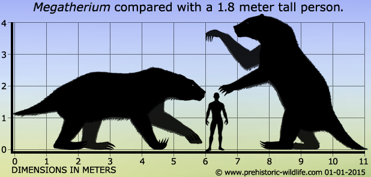
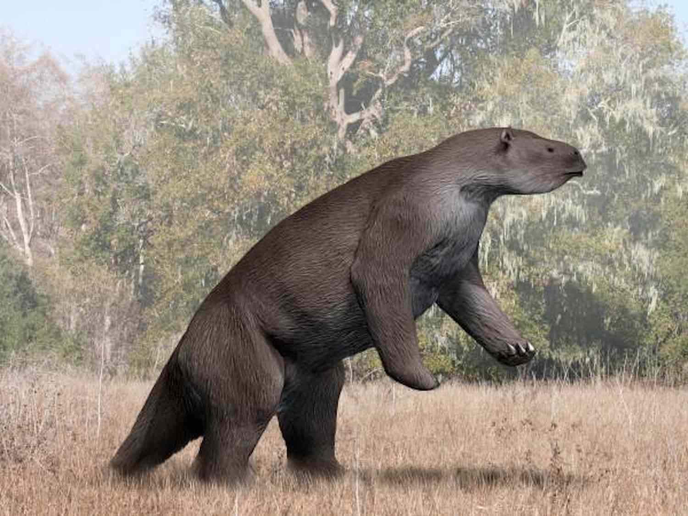
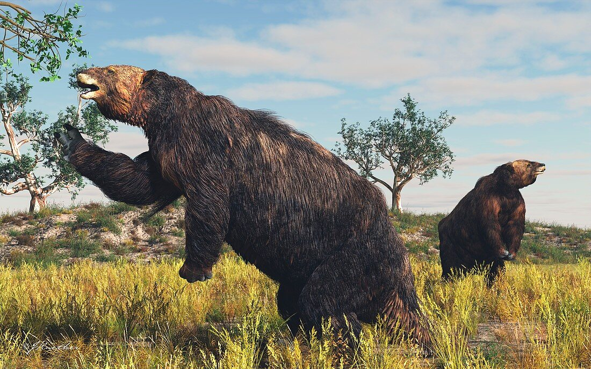
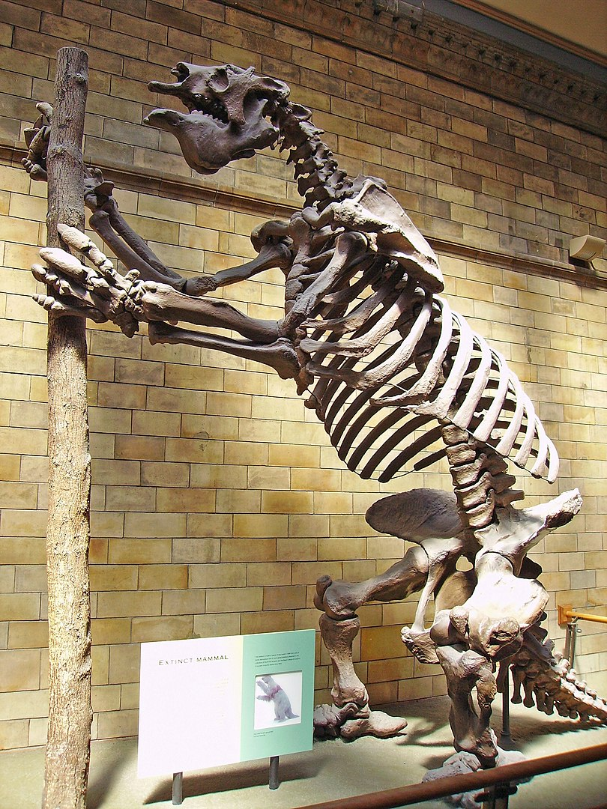
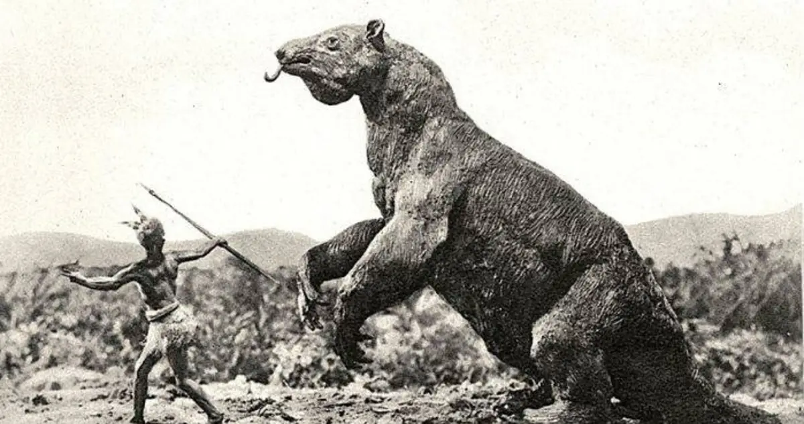

Megatherium
Lười Đất Khổng Lồ thế Pleistocene
Tổng quan
Thế
Pleistocene
Họ
Megatheriidae
Chi
Megatherium
Cao
6 m
Nặng
4 tấn
Thức ăn

Megatherium là một chi lười đất với kích cỡ như voi sống cách đây 2 triệu đến 8.000 năm về trước. Chi có quan hệ họ hàng gần là Nothrotheriops, chủ yếu là các loài lười với kích cỡ như gấu. Chi Promegatherium với kích cỡ như tê giác được cho là tổ tiên của Megatherium.
Nguồn: wikipedia.org
Phân bố
Khu vực Nam Trung Mỹ
Thông tin thêm về Megatherium
Kỷ nguyên và phân bố
Cũng giống như tổ tiên hiện đại của nó, loài lười trên cây hiện đang sinh sống ở Nam và Trung Mỹ , di tích Megatherium chỉ được tìm thấy ở ba nơi ở Nam Mỹ ; Argentina, Uruguay và Bolivia. Các nhà nghiên cứu tin rằng loài lười đất này đã đi khắp Nam và Trung Mỹ. Dựa trên các di tích hóa thạch được phát hiện bởi các nhà nghiên cứu, họ ước tính rằng Megatherium sống trong thời kỳ giữa thế Pleistocene cho đến khi bắt đầu thế Holocene, khoảng 2 triệu cho đến khoảng 8.000 năm trước.
Tên khoa học
Megatherium có nguồn gốc từ tiếng Hy Lạp mega [μέγας], nghĩa là "lớn", vàtherion [θηρίον], "thú". Megatherium Americanum - "quái vật lớn đến từ châu Mỹ", là loài lười đất khổng lồ duy nhất thuộc chi Megatherium.
Kích thước
Những con lười hiện đại thường có chiều dài dưới một mét và chỉ nặng khoảng 5kg (11 lbs). Nhưng các nhà nghiên cứu ước tính rằng Megatherium lớn hơn gấp 10 lần. Các hồ sơ hóa thạch hiện tại chỉ ra rằng con lười khổng lồ này đạt trọng lượng lên tới 4 tấn (8.000 lbs) và cao hơn ba mét khi đứng thẳng trên hai chân sau. Và tính từ đầu đến đuôi, trung bình Megatherium đo được khoảng sáu mét (20 ft).
Ngoại hình
Cấu trúc bộ xương của nó cho thấy rằng nó đã đi quãng đường dài bằng bốn chân để phân bổ trọng lượng đồng đều. Nhưng chân sau ngắn và xương chậu rộng cũng cho chúng ta biết rằng Megatherium có thể đã dành nhiều thời gian để đứng và ngồi trên hai chân sau và chiếc đuôi ngắn, dày.
Một đặc điểm thú vị của giải phẫu Megatherium là móng vuốt dài 7 inch khổng lồ của chúng. Megatherium có cái đầu và miệng nhỏ lạ thường đối với một con vật to lớn như vậy. Trên thực tế, trong số tất cả các loài lười đất khác tồn tại trong kỷ nguyên Pleistocen, nó có miệng hẹp nhất. Nó lớn hơn ở phía sau và thu hẹp dần về phía trước theo hình nón.
Chế độ ăn
Megatherium là một động vật ăn thực vật. Dựa vào cấu trúc miệng và răng cho thấy chúng ăn có chọn lọc hơn trong những tán lá. Điều này sẽ không thành vấn đề vì nó có khả năng ăn thực vật thấp hoặc đào rễ, thậm chí có thể đã vươn cao hơn trên cây so với bất kỳ động vật ăn cỏ nào khác cùng thời.
Khám phá
Hóa thạch Megatherium đầu tiên được phát hiện ở Argentina bởi Manuel Torres vào năm 1978. Ông đã phát hiện ra chúng dọc theo bờ sông Luján. Một năm sau, Torres gửi hóa thạch đến Madrid, và bộ xương ban đầu hiện đang được trưng bày tại Museo Nacional de Ciencias.
Kể từ khi Torres phát hiện ra hóa thạch Megatherium đầu tiên , các nhà nghiên cứu đã phát hiện ra một số mẫu vật khác trên khắp Nam Mỹ. Một số nơi đáng chú ý là Bolivia, Brazil, Peru và Columbia.
Sự tuyệt chủng
Thời kỳ Đệ tứ chứa đầy những thay đổi về khí hậu. Ở Nam Mỹ, nơi Megatherium sinh sống, nhiệt độ có thể sẽ dao động mạnh và trở nên lạnh hơn, khô cằn hơn. Con lười khổng lồ này không chết nếu không chiến đấu vì chúng ta biết rằng nó còn tồn tại trong nhiều năm nữa. Cá thể mạnh nhất có thể thích nghi ở một mức độ nhất định.
Tuy nhiên, sau đó đến con người. Những khám phá về dấu chân và hóa thạch cho thấy con người đã săn bắt loài lười đất khổng lồ. Nhiều nhà nghiên cứu đồng ý rằng đó là yếu tố chính dẫn đến sự diệt vong của chúng, giống như trường hợp của hàng trăm loài khác trên toàn thế giới trong thời kỳ thay đổi đó.